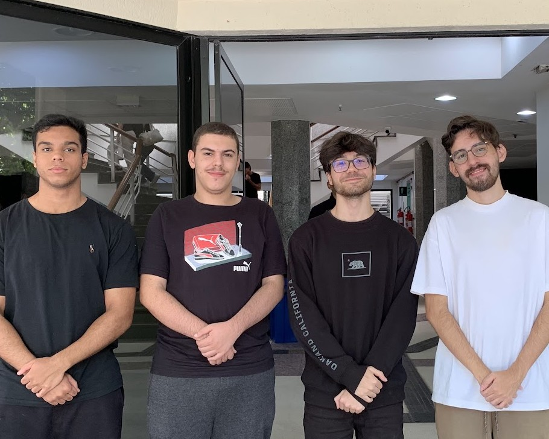

Conheça o Time por trás da Clutch Store
Somos uma equipe apaixonada de desenvolvedores dedicada a criar soluções inovadoras e de alta qualidade. Na Clutch Store, não enxergamos o código apenas como linhas em uma tela, mas como a estrutura fundamental que sustenta a alta performance de cada gamer no Brasil.
Com expertise em tecnologias de última geração, unimos nossas competências individuais para construir uma plataforma que é, ao mesmo tempo, robusta e ágil. Nosso trabalho é focado em transformar a complexidade técnica em uma experiência de usuário fluida, garantindo que o seu único foco seja a vitória dentro do servidor.